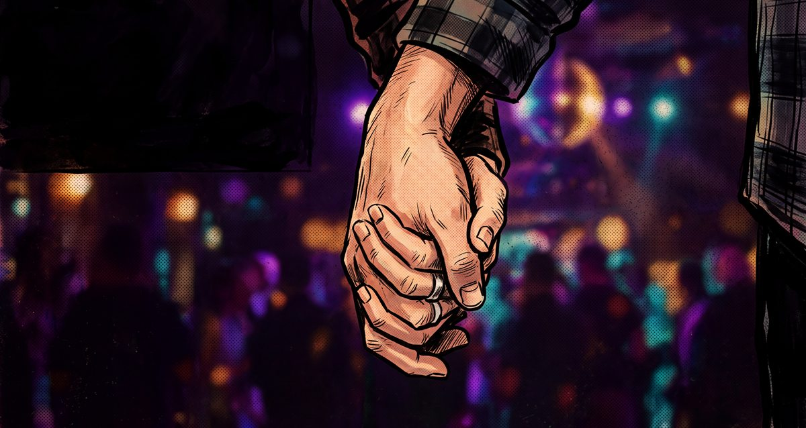

За Кремена и Николай
Двайсет години. И още толкова.
семейство Михайлови · годишнина

Две хиляди и шеста…
Кремена и Николай…
Онази пролет ритъмът бе друг,
но сърцето ми избърза тук.
Едно „да“, изречено на глас —
и оттогава всичко стана нас.
Не помня всяка дума, всеки тост,
не помня и каква музика звучеше.
Помня ръката ти — как трепереше,
и как я хванах, здраво, без въпрос.
Двайсет лета, двайсет зими —
и нито едно съжаление.
И пак ти казвам „да“!
Двайсет пъти по едно „да“!
Кремена, Николай —
един живот, един безкрай.
Любов и благословение,
и дом, в който се връщаш с песен.
Две хиляди и шеста. Оттам броим.
Без карта, без наръчник — просто вървим.
Двайсет зими — нито една студена.
Ти беше огънят. Аз бях стената.
Смени се всичко: телефони, градове,
и песните, които вече не сънувам.
Едно остана точно както бе —
как казваш името ми, щом мислиш, че не чувам.
И между всичко това —
едно момиче с твоите очи.
Павлена.
Най-хубавото, което сме направили заедно.
Не годините ни правят семейство,
а това, че всяка сутрин пак избираме едно и също.
И пак ти казвам „да“!
Двайсет пъти по едно „да“!
Кремена, Николай —
дотук бе рай. Оттук — безкрай.
Любов и благословение,
и дом, в който се връщаш с песен.
Семейство Михайлови — за много години!
Две хиляди и шеста…
той…и още двайсет напред.
Един живот, един безкрай.
Кремена & Николай